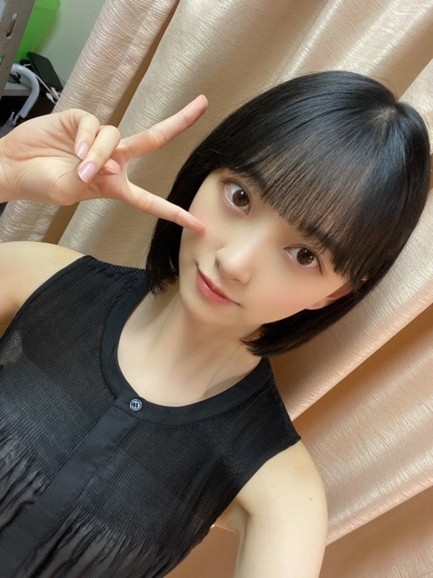
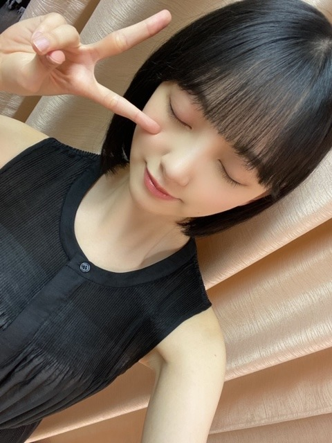
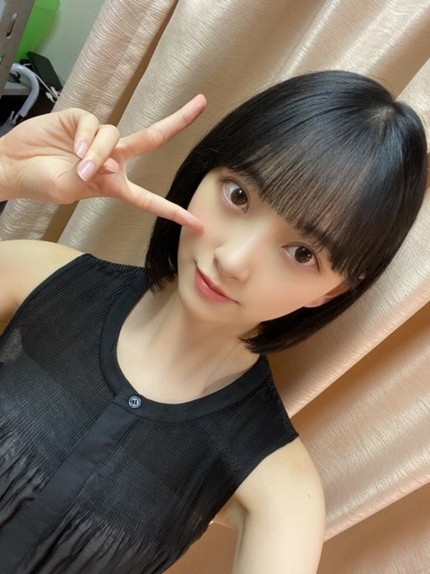
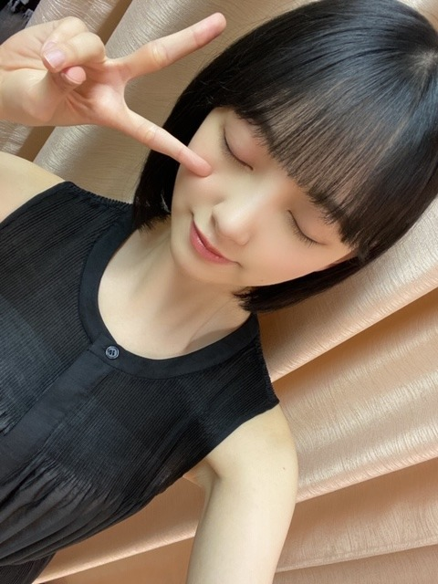

2020/0701Wed変わる不思議
7月ですね
nico touches the wallsさんの
夏の大三角形
がわたしの定番のナツウタです
夏かあ
今はまだ梅雨ですよね
雨の日は天気の子を観る決まりなのですが
天気の子を観過ぎてセリフ覚えてきました☺︎





昨日このワンピース着ていたら
絢音が似合うねって褒めてくれました
髪やメイクや服の少しの変化にも気付いてくれるので
嬉しいんですいつも。
朝ごはんは大好きなとうもろこしです
美味しいとうもろこしと桃を
この夏は追い求めたいとおもいます
では！☺︎
7月ですね
nico touches the wallsさんの
夏の大三角形
がわたしの定番のナツウタです
夏かあ
今はまだ梅雨ですよね
雨の日は天気の子を観る決まりなのですが
天気の子を観過ぎてセリフ覚えてきました☺︎


昨日このワンピース着ていたら
絢音が似合うねって褒めてくれました
髪やメイクや服の少しの変化にも気付いてくれるので
嬉しいんですいつも。
朝ごはんは大好きなとうもろこしです
美味しいとうもろこしと桃を
この夏は追い求めたいとおもいます
では！☺︎
2020/07/01 11:50


コメント(334)
未央奈可愛い！
カレンダー見たら連休があって、
7/23（木）が海の日で、
7/24（金）がスポーツの日なんですって。
スポーツの日って何！！(笑)
もしかしてオリンピック関連？？
降ってますね～雨。
風も強くて･･･傘の意味！！(笑)
あれ？一人芝居観れちゃう感じ？
お～～～～～～～～～～
この写真は！！！！！
有能！！
褒める気持ちが痛いほどわかります。
桃は今のうちですね。
とうも･･･はまだまだたべられますね。
ロングもめっちゃ好きだったけど個人的には黒髪ボブの未央奈ちゃんが、1番好き‼️
てもどっちも似合うよー
ロングもショートも似合うって羨ましいー
私人生で一度もショートにしたことがないの
赤ちゃんの時ぐらい笑笑
黒のワンピースもとっても似合ってるよー
早く握手会に行きたい‼️
ライブも観たいです‼️
これからも頑張ってね
名前の通り永遠の未央奈推しです‼️
ファイティン
さくらちゃんはあやめちゃんとでんちゃんと同じ愛知県出身の愛知の覇王です！
蓮加ちゃんと同じ高校2年生です！
未央奈ちゃんの黒髪ショートすごい似合っていて、可愛いです！
黒髪ショート、めっちゃ好きです！
これからもずっと応援するので、頑張ってください！
体調管理に気をつけて頑張って❗️
いつも応援しています。
黒髪ショートもかわいい
46TVの時ウィッグつけてたので
ロングにするのかなーって思ってたけど
ロングもショートも可愛い
どっちも似合うってすごいね
未央奈の黒髪ボブは最高です！
いつも辛いことがあると未央奈のブログとかを見ます！
色々あるけど未央奈の言葉を聞いたり読んだりすると
僕も頑張ろうって思えます(^^)
未央奈のブログは一つ一つ丁寧で本当に大好きです(^^)
僕はたくさん支えられてますよ！
これからも未央奈らしく頑張って！ずっと応援してます！
梅雨で変な気温多いから体調には気をつけてね！
次のブログも楽しみに待ってます！
かわいすぎる
やばいかわいい
私はボブ未央奈みたいにになりたくて
この子のようにしてくださいってみおなの写真見せたよー！
ブログ更新ありがとう。また短くなった？
それも髪色、茶色から変えたね！
短いと短いなりにそれまた似合う
まだまだじめじめ具合は続くけど体調に気をつけて頑張ってください！
ボブ未央奈可愛いーー
勝手に未央奈は白の洋服とか衣裳が凄く似合うと思ってたのね。でも、黒のワンピースもめっちゃ似合うねぇ
「いつかの待ち合わせ場所」39P～40P
大人未央奈の魅力がまだまだ続くねぇ
写真自体が衣裳のせいかセクシーだからなのか、ここのページも前のページもだけど、表情が凄いセクシーなんだよねぇ
未央奈大好きやぁ～
天気の子見たことないから見てみよ。
山梨県に行った時に食べた『黄金桃』がお薦めですよ！
食べ頃を間違えなければマンゴークラスの桃に出会えるかもwww
梅雨ですね
ボブ似合ってます
黒髪に黒いワンピース
バッチリ決まってる！
絢音さんに褒めてもらえて
嬉しいね(^_^)
写真ありがとう
いつも見てますよ～
黒髪ボブ未央奈ちゃんも素敵です
服もオシャレで似合ってる✨
とってもとっても
似合ってます！
かわいすぎます。
ありがとう
ブログ更新ありがとう
黒髪ボブ最高です＼(^^)／
すごく似合ってます！
待ってましたよ(^^)
体調には気をつけてね♪
これからも応援してます
ボブ未央奈可愛い！
いきなりのサプライズで、疲れが一気に吹っ飛びました！笑
46時間テレビでは、髪が伸びたらエクステとると言っていたからビックリ！！
髪が長い未央奈ちゃんも好きだけど
ボブの未央奈ちゃんはもっと好きだなー！
黒のワンピースもすごい似合ってるよ！
最近、少し気持ちが落ち込んでいたけど、
また頑張れそうだよ！
いつもありがとうね！
堀ちゃんの黒髪ショートを久しぶりに
見られて嬉しいです！
黒のワンピース似合ってますね！！
天気の子の再現待ってます
次のブログも楽しみにしてます！
天気の子まだ見てないんだよね...
見ようと思うけどまだ見てない...
インスタもたくさん更新あって嬉しい！
これからも応援してるよ！
体調には気をつけてね！
雨が凄すぎる
『天気の子』は何だかこの時期にはぴったりな気がするね。
僕も映画館で観たけど、ほんと映像美が素晴らしかった
なんか、映画を見ていると「この世界観いいよね」っていう映画あるよね。
アニメ映画なんかは特に。
数日前に、エヴァンゲリオンの映画の本来の公開日を迎えたと思うんだけど、やはり公開延期となった・・・。
うんうん、そのワンピースめっちゃかわいい
ブログ更新ありがとうございます。
今日から７月、今年も下半期を迎えました。まもなく「猛暑って言っているうちに、もう正月だぞ」の季節を迎えますね。
そして、早速のブログ更新、上半期も堂々１位の更新数、これからもよろしくお願いします。
そして、開いたこのブログ、未央奈の顔見て、「やっぱりこれだ～」って思いました。４６時間ＴＶでもエクステでのロングでしたが、「黒髪ショート」、私はやっぱり、これが好き。と言うか、これが一番似合っていると思います。
この未央奈に早く会いた～い。そんな気持ちでいっぱいです。
せいちゃんが言ってたけど、４期生の後輩たちにたくさんのプレゼントありがとうございます。自分がしてもらったことを後輩たちにも返していく、これが乃木坂４６の素晴らしいところ。これからも限りない後輩愛、よろしくお願いしますね。
1番このボブが一番！！可愛すぎます！
今日もお疲れ様です
苦手な梅雨ですが、そろそろ折り返しだと思うので乗り越えて頑張ります
髪型は強風と雨で一瞬で終わります（5秒ともたない）
黒髪ボブとっても可愛いです
みおな推しになったタイミングが黒髪ショートの頃だったので、俺としてはとてもしっくり来ます
眠いから少し短いけど、7月も頑張りろう！
ありがとうございました
まさにナツウタ！
3秒間〜♪
梅雨だね〜最近梅雨感ある天気よね。
お、さすが。
天気の子いいよねー！✌️
君の名は。とはまた違った良さがあるー！
少年の危なっかしすぎる少年っぽさがよき。
ショートもかわいいっ！
さすが絢音ちゃん。
みお、ワンピース似合うね。って感じー？
朝からとうもろこし！いいねー！
おいしいもの食べて元気に過ごしましょ
(^-^)
ではでは！☺︎
黒の統一感♪
回転速いだけじゃなくて記憶力もある
探偵系もハマリキャラやわ〜
アニメもめっちゃ好きみたいだけど、アクションもイケるし、actingはぜひともpursueしてもらいたいもんだぜ
「偏見だと思います。」、「こうなったら全面戦争でいこうと思います。」などなどバラエティーでも数々の心に残る笑えるコメントもしとるし〜
全身見せてくれないとどんなワンピースか判んないよ
黒髪ボブになったのですね！！
改めて言わせてください！
めっっっちゃ好きです！！！めっちゃくちゃ可愛い！！！！
もちろんずっと好きなんですけど、黒髪ボブだから好きだと言っているわけではないんですが！
とにかく今は好きだと伝えたいです！！
ほんとに似合いますね、なんでこんなに似合うんでしょう、不思議なほど可愛い(o^^o)
可愛いってな一体なんだろうと考えたくなるほどです、可愛すぎて軽くパニック((((°_°))))
堀ちゃんの黒髪ボブっていつぶりなんでしょう、もしかしたら実はそれほど前から時間が経ってなかったりするんでしょうか( ´ ▽ ` )
それでもとにかく今日は見た瞬間大歓喜でした(o^^o)♩
めちゃくちゃ個人的な願いですが、それぐらいの長さで後ろで一つくくりにしている堀ちゃんがまた物凄く大好きなので、もしも願いが届くなら…見たいです( ´ ▽ ` )笑
堀ちゃんの髪型が変わるたびに僕は幸せを感じている気がします(^^)笑
ポニテもハーフアップもめちゃくちゃ好きですからね〜、堀ちゃんの好きな髪型は挙げたらキリがないです( ´ ▽ ` )
それでもやっぱり僕にとって黒髪ボブの堀ちゃんは特別なのかもです、堀ちゃんを好きになったときがそうだったから(o^^o)
明日からまたブログやモバメで今の堀ちゃんを見られると期待していても、いいですか？(o^^o)
楽しみにしている時間がそれだけで幸せです( ´ ▽ ` )♩
ちなみに夏の大三角形、僕も好きです、大学生のときカラオケで歌ってましたー！
あの頃を思い出すので、個人的にナツウタであり青春ソングでもあります(o^^o)
明日の朝聴きながら会社行こ〜っと( ´ ▽ ` )♩
歌ってると気持ちいいんですよね、あの時期も楽しかったなぁ( ´ ▽ ` )
今日もブログにモバメにインスタ755、全部ありがとうございます！
堀ちゃんは更新することを特別なこととは思っていないのかもしれませんが、こういう行動を通してファンを喜ばせてくれて、こんなにファンのことを大事にしてくれるアイドルはそういないですよ(^^)
少なくとも僕は間違いなく堀ちゃんに大事にされているといつも感じています、本当にありがとう(o^^o)
明日からも堀ちゃんが幸せでありますように！
では！またコメントさせてくださいー！
相変らず肌が美しいですね。片耳出てるボブがとても似合ってて可愛くて好きです。夏の大三角形はカルピスのCMの曲だったんですね。ボブの堀さんはカルピスのCMみたいな自転車や砂浜が絶対似合うと思います。
ワンピース姿を鈴木さんに褒めて貰えて良かったですね。少しの変化にも気付くのは、いつも気にかけてるってことなんですね。
雨の日に天気の子を見るのは、自分に降りかかる辛い事も誰かが救われた証拠かもしれないってことに思えますね。宇多田ヒカルさんの「誰かの願いが叶うころ」を思い出しました。
では、とうもろこしや桃だけじゃなく堀さん自身の新たな一面をたくさん追い求めて、まだ見ぬ理想に出会う夏にしてくださいね。
ブログ更新ありがとう。
久々の黒髪ボブ、新鮮で良いね
未央奈何しても似合うから羨ましいよ
暑くなってるから体調には気をつけてね
髪切ったんですね
堀さんは元々ショートのイメージが強くて、伸ばしたときもすごく可愛かったのですが、改めてショートを見ると初めの頃と違って幼さが消えてすごく美しいです
僕は結局どっちも好きです笑
堀さんはこまめにメイク変えたりして美意識が非常に高いので、男性とかでも使いやすい化粧水・乳液とか知っていたら是非教えて欲しいです
また仕事が始まって忙しくなると思いますが、体調に気をつけて頑張って下さい
それって、夜になったらブレイド２を毎日観てるみたいなこと！？苦笑
夜にダークナイトを毎日観るとか・・・？
というわけで、ゴジラ・キングオブ・モンスターズ観てから寝よう・・・。
今週末も頑張って行きましょう・・・。
少し早く目が覚めた(笑)
昨日は久しぶりに21時過ぎにコメントしたよ✨
元気そうで良かったよ☺
ではではまたね。
ほなね、堀ちゃん☺
黒髪ボブも可愛い！
同じショートでも大人っぽさあるね
ワンピースも可愛いな～
透け感とか胸元のプリーツの切り替わりとか
黒だけど夏らしい♪
首元がゆるすぎず、きちんと感があるのもいいね！
全身も見てみたいなー
みおなが見せてくれる色んな髪型やメイクやファッション、
いつも似合ってて可愛くて
色んな魅力を知れるのが嬉しいし楽しみなんだ♪
みおなの好きな所のひとつ(^-^)
7月。
一年の後半が始まったね！
これからもよろしくね
みおな I LOVE U
七月に入りました。いよいよ夏本番、と言いたいところですが、まだ東京では梅雨明けとはいかないようで、昨夜も盛大に雨降りでした。本格的な夏までもう少しですね。
黒髪ショートに黒のワンピースがすてきです。ちょっとした髪や服やメイクの違いもすぐ気がついてくれるなんて、鈴木さんたら理想の彼氏みたい（笑）。
ではまたコメントします。今日も元気にいきましょう。
さらばだ、また会おう！（気球に乗って去りぬ〜）
コメントする